Project idea
Perspective depends on where the camera is.
In each experiment, I changed camera distance and focal length while trying to preserve the apparent size of the main subject. Moving the camera changes perspective because it changes the relative distances from the camera to points at different depths. Zooming changes the field of view and lets us recover similar framing from a new camera position.
Part 1
Selfie: The Wrong Way vs. The Right Way
I photographed the same subject from three distances. As I moved farther away, I increased the zoom so the face stayed roughly comparable in size. The close image has the strongest perspective distortion, while the farther views look progressively more natural.
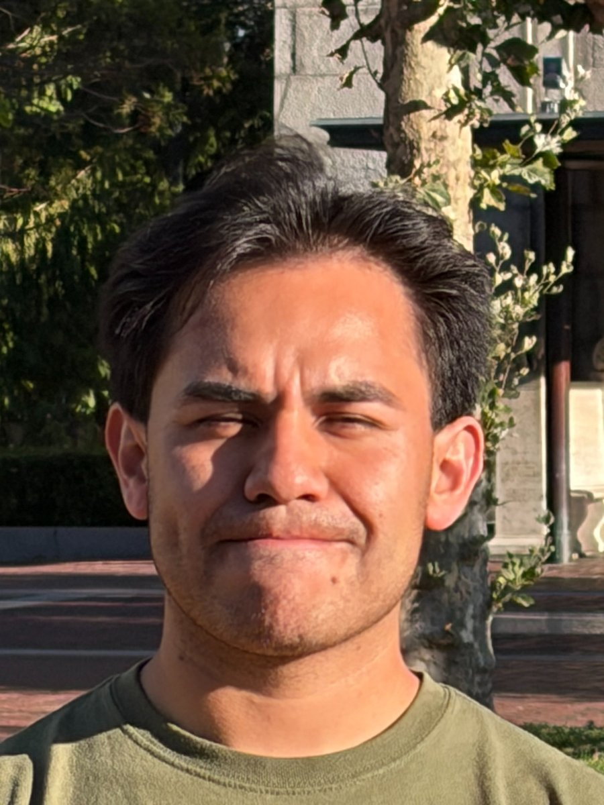
When the camera is very close, the nose is substantially closer to the camera than the ears and sides of the face, so nearby features are exaggerated. After stepping back, those depth differences become small compared with the total camera distance and the face looks flatter and more natural. The zoom restores framing; the change in camera position is what changes perspective.
Part 2
Architectural Perspective Compression
I first photographed the building from farther away with a tighter field of view, then walked closer and used a wider field of view. The building remains the main subject, but its apparent depth changes because the camera center has moved.
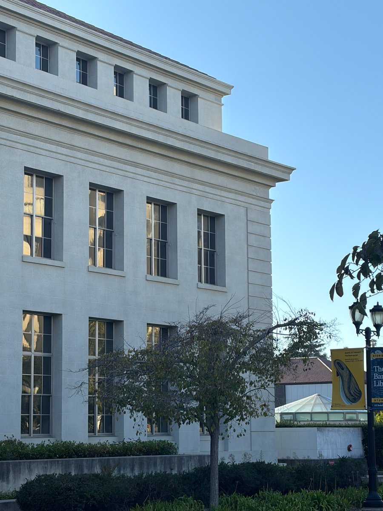
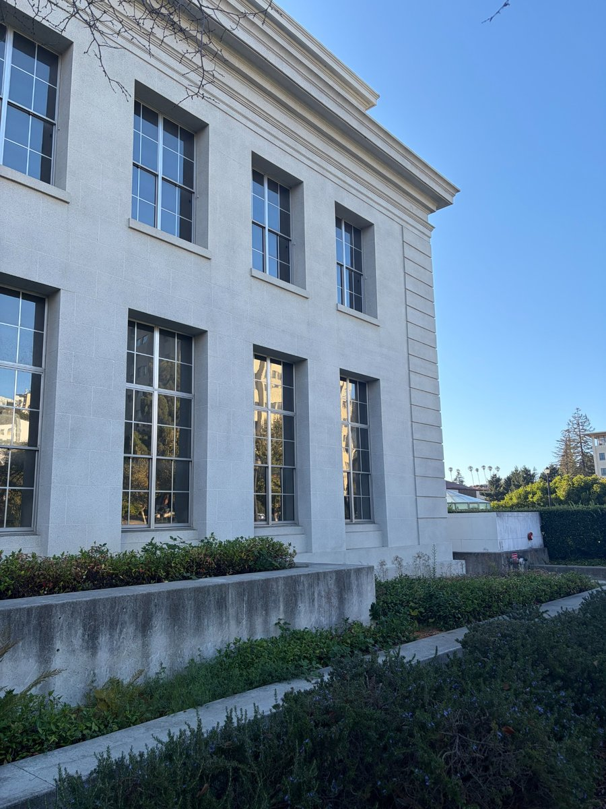
From farther away, the distances from the camera to the near and far portions of the building are relatively similar, so their projected scales are more alike and the scene appears compressed. From close up, the relative distance differences are larger, making nearby structure appear larger and emphasizing convergence and depth.
Part 3
The Dolly Zoom
For the dolly zoom, I used the stone sphere as the foreground reference and the Campanile/building area as the background. Across ten photographs I changed camera position while changing zoom, so the foreground remains visually prominent while the background changes scale.
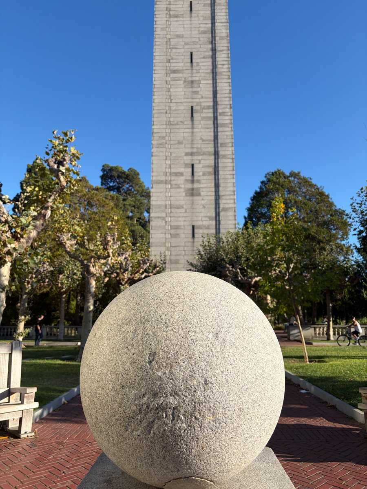
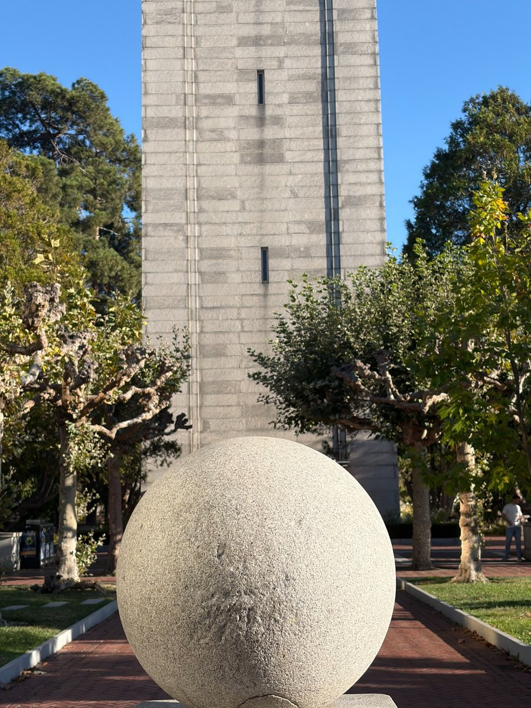
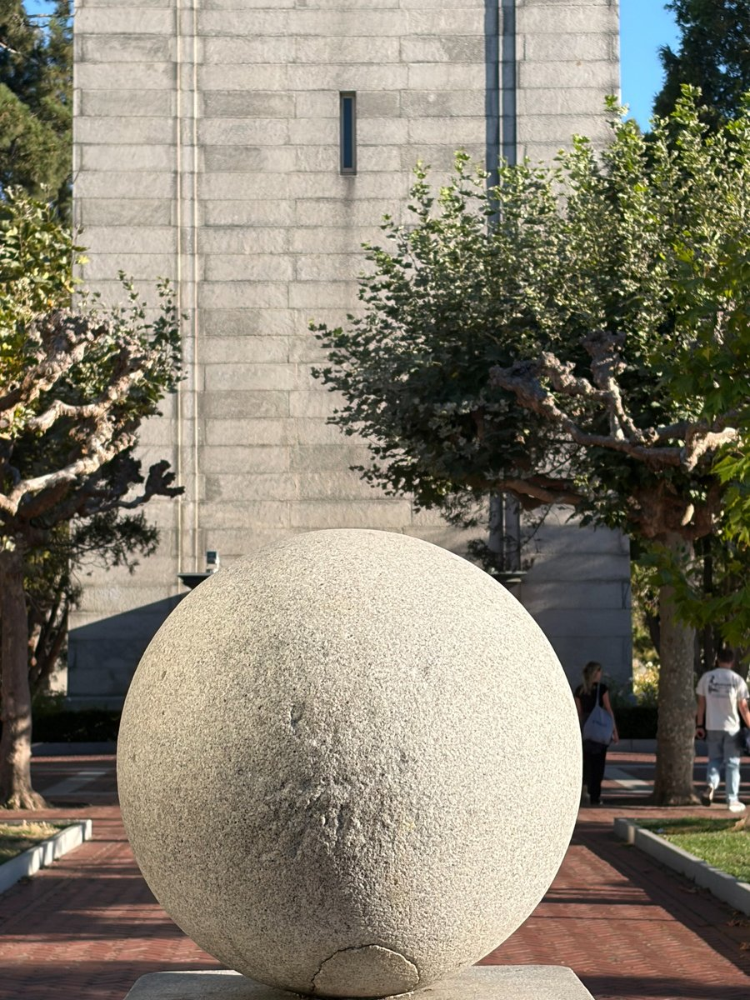
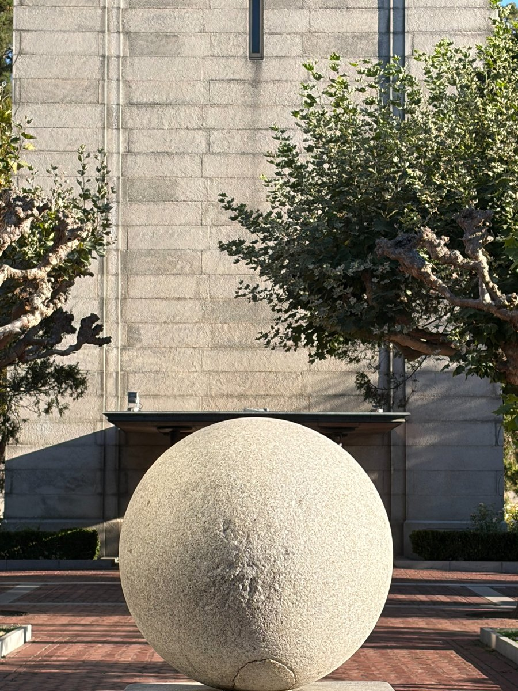
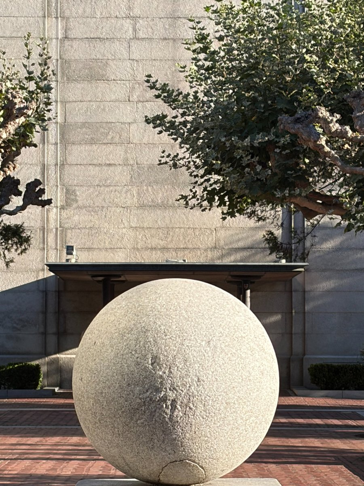
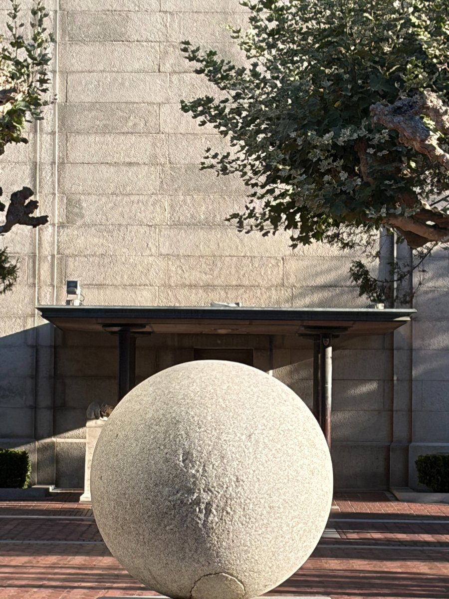
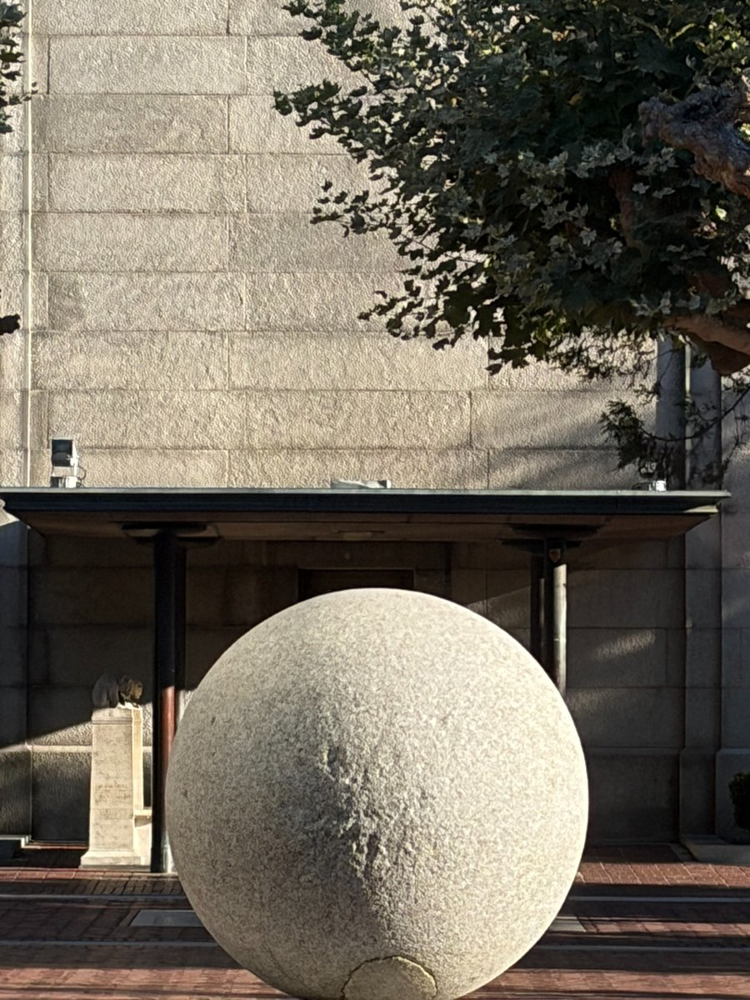
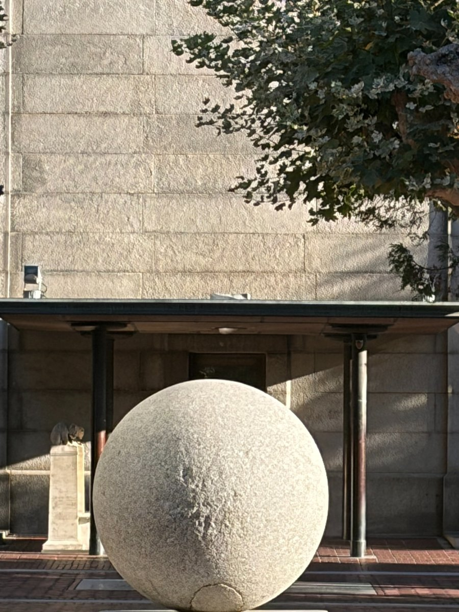
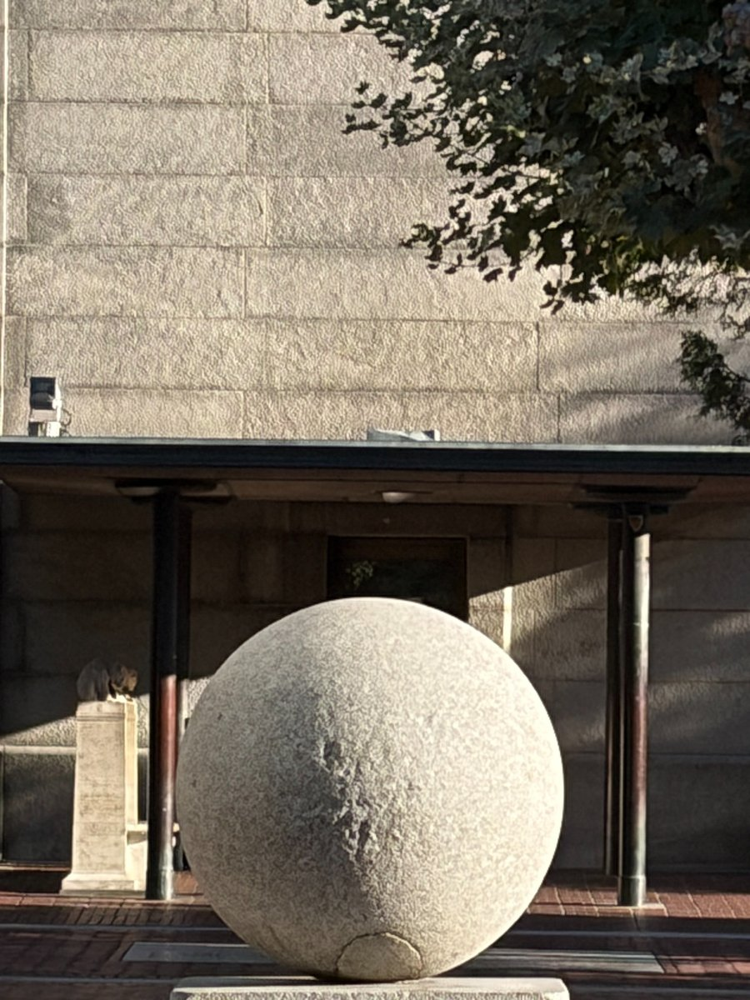
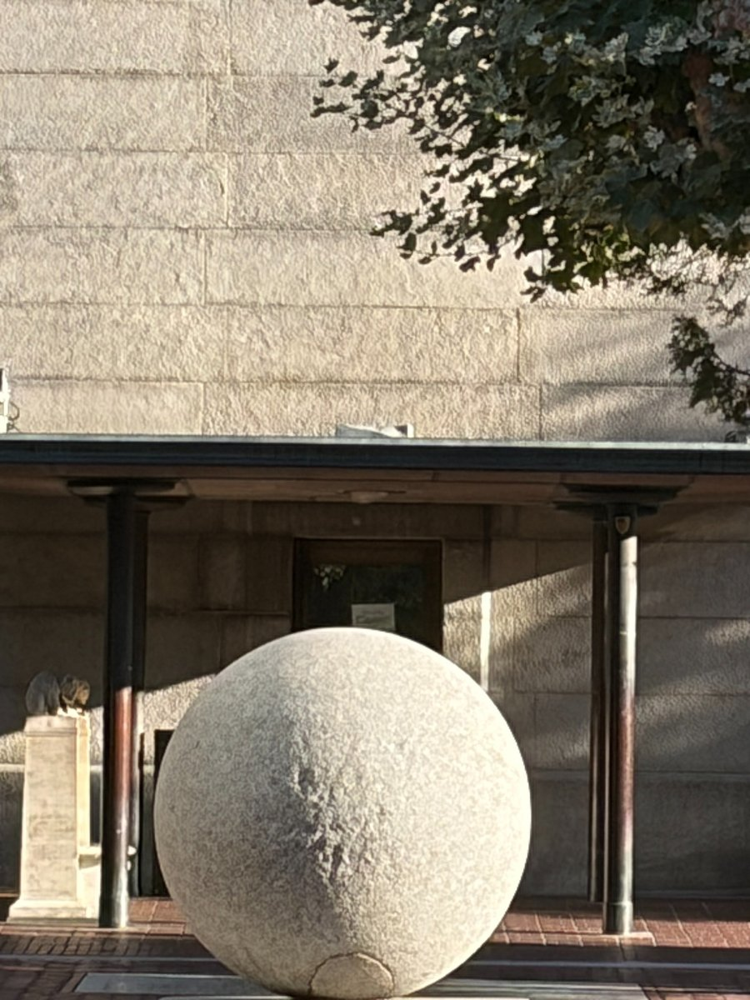
A dolly zoom combines camera translation with a compensating change in focal length. The chosen foreground subject can stay at roughly the same scale, while objects at other depths change their apparent size relative to it. This makes the background appear to expand or contract and produces the classic “Vertigo shot” effect.